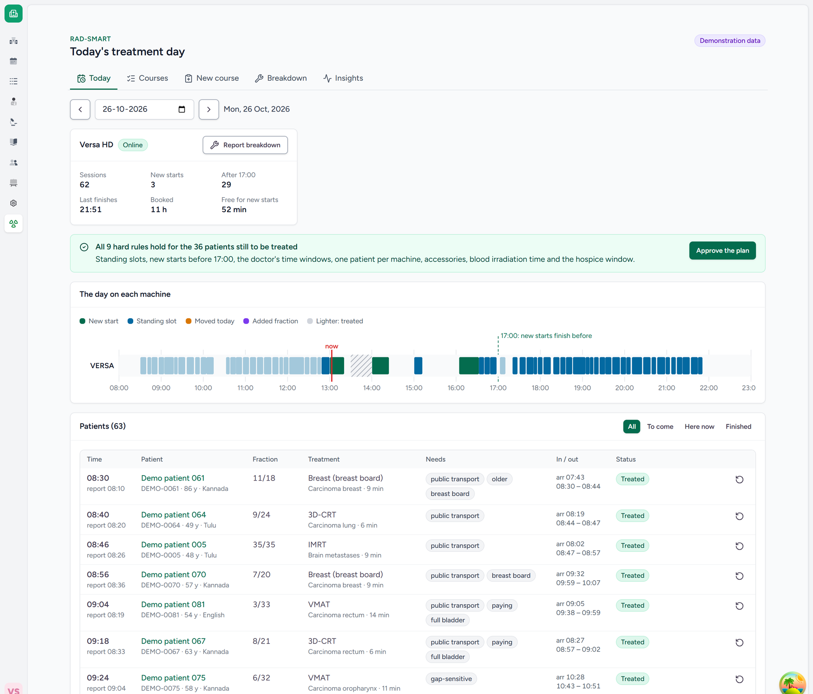
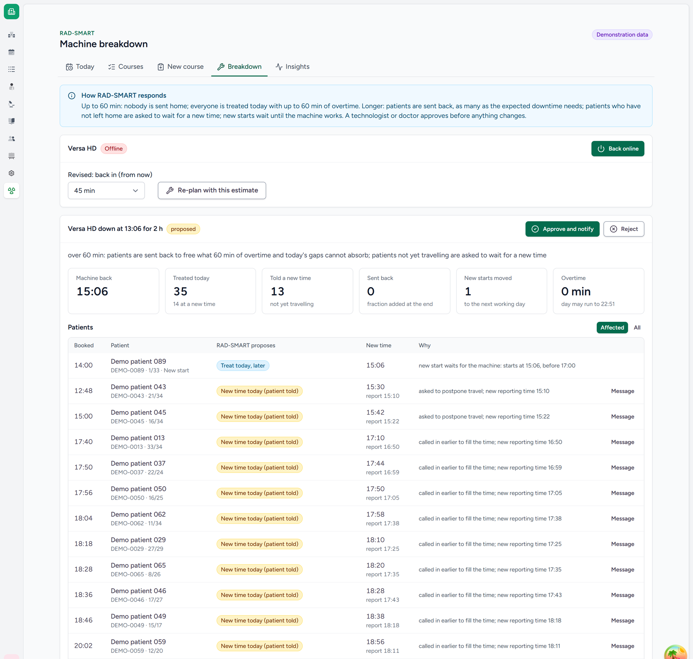
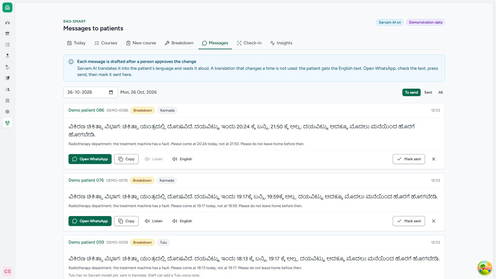
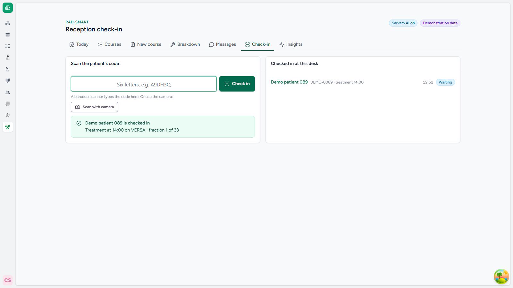

Health-a-thon 2026 · Cancer track · Clinic operations and patient flow
RAD-SMART
The right patient, on the right machine, at a predictable time.
Radiotherapy patients come every weekday for weeks, and many wait more than an hour and a half for a few minutes on the machine. RAD-SMART plans the machine's day so that waits are short and every department rule is kept, and it re-plans in seconds when the machine breaks down. A doctor or technologist approves every change.
Dr Akshay Dinesan, Manipal (team leader) · Abhinand T M (technical lead) · P S Raghotham Rao (lead engineer) · Dr Shirley Lewis Salins · Dr Umesh Velu
The problem
One machine, 70–90 patients a day, long waits
The department's records: 55 days, October–December 2024, 3,137 patient visits, used only as anonymised totals.
Why this design
We compared five ways; a hybrid scored best
Each way is a different method of deciding who gets which time on the one machine. We scored each out of 5 for safety, how much it cuts waiting, speed when the day changes, ease of building, ease of explaining, local languages, and how easily the rules can be changed. The scores are our team's judgement, not measurements.
Fixed timetable 3.1
The same slots every day, like a school timetable: for example, breast patients at 9:00 and new patients at 14:00.
Good: simple and easy to understand.
Gap: real days never match it. Long sessions, late patients and breakdowns pile up through the day, which is what happens today.
Chatbot (AI) alone 2.6
Ask a ChatGPT-style AI to write tomorrow's schedule.
Good: talks in plain words and local languages.
Gap: it cannot promise the rules. It may put a new patient after 17:00 or two patients in one slot, and it is weak at exact timing.
Optimisation alone 3.6
A maths program (a solver) that searches every arrangement for the best one that keeps all the rules, as airlines do for crews.
Good: rules are always kept, and plans are efficient.
Gap: it uses only the numbers it is given. It does not learn how long each patient takes, follow the day live, or explain itself.
Self-learning AI 2.5
Reinforcement learning: an AI that learns by trial and error over millions of practice days, like game-playing AIs.
Good: could in theory find clever plans on its own.
Gap: needs far more data than 55 days, cannot say why it moved a patient, and cannot guarantee the rules.
RAD-SMART hybrid 4.9
Each part does what it is best at. Prediction learns session times from past records. The solver builds the plan and guarantees the rules. A virtual copy of the department tests the plan and re-plans after a breakdown. The chatbot only explains and messages patients. A person approves every change.
In short
Each method alone leaves a gap; together they cover each other. It can also be built in layers, so the solver with average session times works from the first week.
How it works
Four steps, and a person decides
How many minutes each patient needs on the machine.
One time slot for each course, with every rule guaranteed.
Try the plan in a virtual copy of the department first.
Messages and voice notes in Kannada, Malayalam, Hindi and Konkani, by Sarvam AI.
People decide. The doctor approves each course and its time slot. A technologist or doctor approves every change on the day. RAD-SMART decides only when a patient is treated, never whether or how.
The app
A working app inside CARE
RAD-SMART runs as a plugin in CARE, the open-source hospital information system of the Open Healthcare Network, with a RADSMART button on the patient's visit page. All patients shown are synthetic.
A narrated recording of the real app, with captions: the doctor plans a course, the patient sees it on their phone in Kannada, reception checks them in, the technologist runs the day, the machine breaks down and every patient's message is drafted in their language, and the waits are measured. Step by step in the user guide.
Try it · demonstration
One click, no password
Go straight in as a member of the department, or open a patient's phone page. Every patient is synthetic, and the data starts afresh each morning. At any hour, you can start a fresh working day at 10:30 from the front page.
Real use
Signed in as hospital staff
Each person signs in to CARE with their own account, and RAD-SMART checks their role at every step: only a doctor approves a course, reception checks patients in. Nothing changes a patient's time until a person approves it. Patients get their messages on WhatsApp, with a private link to their page.
Reviewer accounts are available from the team. The server sleeps when nobody is using it, so the first page takes about 20 seconds.










Tested: 112 of 112 Sarvam translations in four languages kept every time; 20 of 20 plain-word explanations used only the plan's times; 30 automated tests pass. Next phase: reading the paper prescription by photo, importing the department's past records, and spoken replies from patients. Details in the Phase 2 submission.
Deployed
Live on Microsoft Azure, in one Docker image
Not a laptop demonstration: the build a hospital would run, online now, with the parts a real service needs.
One Docker image
CARE's own production build with both RAD-SMART plugins, nginx and gunicorn. Built the same way every time, with no secrets inside.
Azure Container Apps
HTTPS and health checks. It sleeps when nobody is using it and wakes on the first visit.
Managed database
Azure Database for PostgreSQL, with automatic daily backups.
One script to run it
Creates, builds, migrates, deploys and checks everything. Every release is a tagged image and the last three are kept, so going back is one command.
Costs kept in check
A daily limit on AI spending, and a guard that takes the server offline before its free hours run out.
Tested
30 automated tests on the plugin, and the engine's tests run by GitHub on every change.
From demonstration to pilot: settings, not new code. The same image runs with demonstration mode off and staff signing in with their own accounts, on the hospital's own server beside its CARE, or in an Indian Azure region so patient data stays in India. How it is deployed.
Results · with and without RAD-SMART
Long waits fall by more than a third
The long wait: one patient in ten waits longer than this, from arrival to the treatment room.
"Replayed" means the department's days re-planned in a virtual copy of the department, which reproduces today's long wait closely (106 against 109 minutes). It is not yet a live trial; the pilot will measure it.
When the machine breaks down
A new plan in seconds, not a lost day
The department's rules
Up to 1 hour: nobody is sent home; everyone is treated, with overtime.
Longer: only as many patients are sent back as needed, those still at home first. The missed session is added at the end of the course.
Always: a technologist or doctor approves before anyone is told.
Next step
Safe by design, then a 90-day pilot
Pilot target
25% shorter
long waits than today's 109 minutes, with no rule broken.
Safe by design
- A person approves every change
- Every plan is re-checked against the rules
- No names or phone numbers go to AI models
- A translation that changes a time is never sent
- Every change is logged
Read more